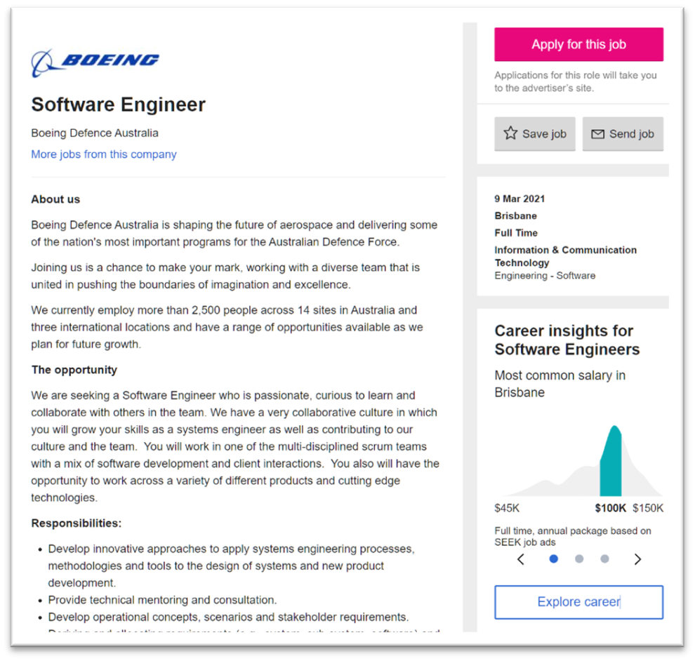
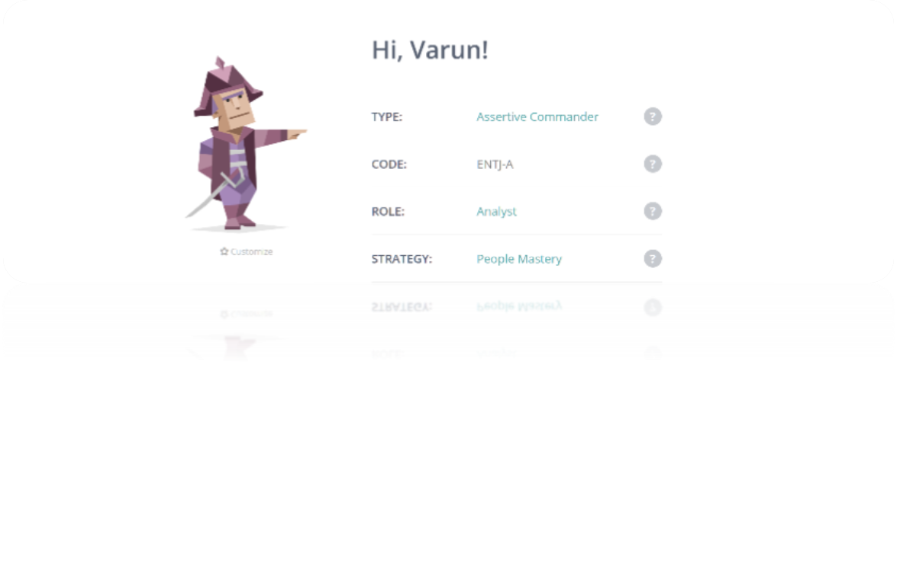
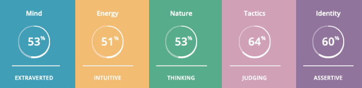
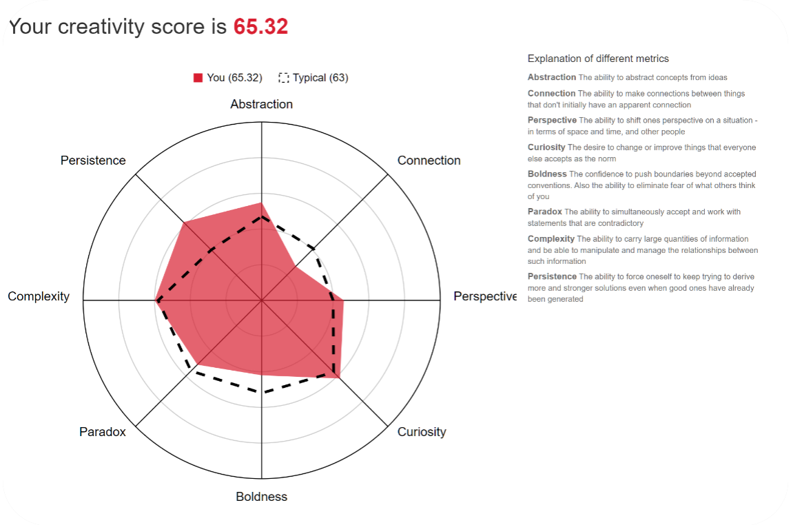
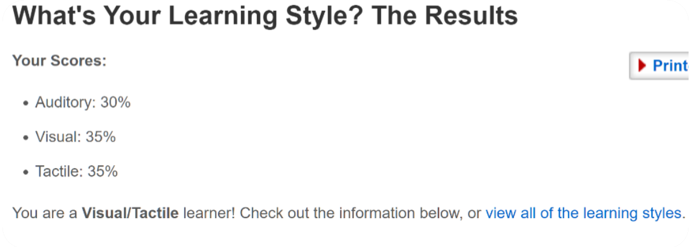

I Am A MASSIVE Alpha Male
Hello People of the sphere world my name Is Varun and I am doing first year bachelor of IT (Information Technology) for all you boomers. For all of you’s trynna @ me, my student number is s3897532 and ma email address is S3897532@student.rmit.edu.au. A bit about myself, I was Born in Australia and moved to Fiji for 2 years when I was a toddler, then permanently moved back to Straya when I was 5 years old. An interesting fact is, I am capable of bench pressing 10kg and, my hobbies are cycling, playing Valorant(lol) and badminton with the boizz.
I am interested in software engineering/ programming. My fascination of IT began when I had realised that everything runs on a program, all those webs, games, animations are done by programming. The realization instigated me to try programming since everything on my computer is able to function due to a program. The main reason I chose RMIT because I was told, they provide a better job opportunity and it was more convenient to attend RMIT when travelling. I expect to learn the basics of IT during my course so that I can wisely spent another $7k, furthering my career.
This Job is particularly intriguing as Boeing is a well-known company and this job requires problem solving. Qualification required for this job is bachelor’s in ‘Information Technology’ or ‘Computer Science’. Experience required for this job are Scrum which is a framework for project management that emphasizes teamwork, accountability and iterative progress and software developing skills. A trait that I currently possess is the satisfaction of problem solving. Skills that I currently have are Communication skills, ability to flexibly manage time, when needed and the ability to work as a team. I Believe these skills will allow me to effectively assimilate into certain jobs. Skill that I still require Is the ability to work under pressure, as in many jobs working under pressure is essential to increases team effectivity and morality. I will need to acquire this skill be placing myself in situation and environment that will lead me to work under pressure or gain experience by working in a fast place environment such as fast-food joint. I also need a bachelor’s in information technology, but I am aiming to do a Masters’ at least to increase my employability rate. I will acquire a bachelors/masters through university

By completing 16-Personailties, Creativity test and the Learning-Style test, I have gained a somewhat of a meaningful insight about myself and how I present myself to others. 16personality has stated that I am a commander henceforth a ‘leader’. This means I am assertive and judging person. I would say that I am somewhat assertive with my opinion and straight to the point. Judging refers being decisive, thorough, and highly organized. I would consider myself as judging as I like thing to be planned out. The creativity test displays that I am curious and persistent. I would say I am both curious and persistent in the way I try to finish and complete tasks I set for myself and finding meaning about things. The learning style has concluded that I am Visual/Tactile learner. I would say this is very true, as I learn the best by writing and watching thing. With these results I may try to be less assertive in group projects. When forming groups with people I may take into consideration how are well organised people are.
The project that I entail to make a reality is an app that takes into consideration of cyclist. This app will establish a save journey/ path for cyclist in which they are excited to take their bike any destination they wish without worrying about inconsiderate drivers on the road. As cyclist may be wary of the danger of riding a bike on the roads in which people in cars are travelling in speeds 2-3 time faster than the speed of cyclist. Therefore, I am proposing an idea to ease the anxiety of cycling on the roads.
As Covid-19 has affected the way people interact to each other it has also affected the wellbeing of millions of Australians. During 2020 the subject of mental health has interweaved itself as a topic of debate and to this day is still prevalent, hence, fitness has become a subject of attention for many people. Many people have taken into consideration they own health during the tough time of covid. Therefore, during there has been an increase of fitness equipment being purchase, consequently the amount of bike has increase and more cyclist have started making their journey onto the roads. Now comes the issue that cyclist is aware of… They current stigma toward cycling effects their own safety.
This idea entails an app for phones that finds alternative save paths for cyclists. It will aim to make cycling enjoyable and safer. Many roads around Victoria don’t have distinctive lanes for cyclist, meaning cyclist need to share lanes with people in cars, which may be daunting of inexperience cyclist. This app will be able to find routes that are less congested and more bike friendly e.g., more bike lanes or larger bike lanes for cyclist, aiming to minimise the amount of bike and car related incidents, whilst finding alternative routes for cyclist and the best terrain. Since this app will be active when cycling, it will offer an audio description on the direction to take for those who may not have a phone holder and for those who do have a phone holder, it will display and feed an audio description for more accuracy. This app will also keep track on the distance, time, speed, elevation, descent of your journey’s and provide a map of your journey of which areas you travelled the fastest and areas where you had the best pace. By implementing this kind of tracking, users are more inclined to try improving their times taken on their journey’s whilst offering an element of competitiveness when using this app. For more of an incentive toward using this app, it will display with the consent of other users’ their travel time, so that people can compete with each other’s time and celebrate their achievements on the app.
To create this app, I will need to use Geolocation, Appery.io and google maps. These software and application will provide the foundation required to develop this app. Appery.io will be the bases of the app and where I will develop a user interface. Google maps will act as a template for my app, as it is reliable, easy to work with and exhibits coherent information about locations. Geolocation will act as the data service, which uses internal GPS devices to determine locations. Geolocation displays your current locations, wherefore show if you are going the right direction.
To develop this app, I will need design/ User interface skills, clean coding data skills. I will need design skill to create app that is easy to use and easy to navigate through the app. Clean coding, so that the app runs smooth and specific coding to only show routes available for cyclist. Data skills to build a useful database to hold all the information of the users.
My end goal for this app is, to help people who want to cycle or people who are already cycling to focus more on the beautiful natural scenery rather than worrying about the interference of cars. As cycling is all about enjoying and test your own capabilities as you travel to your specified location.
Reference:http://teconcetheme.com/HTML/rezyme/
Interest In IT
Ideal Job
Personal Profile
16 Personailties


Creativity Test

Learning-Style Test

Project Idea
Overview
Moviation
Description
Tool And Technology
Skills Required
Outcome